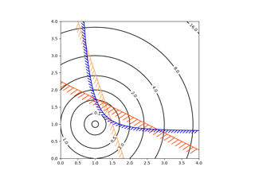
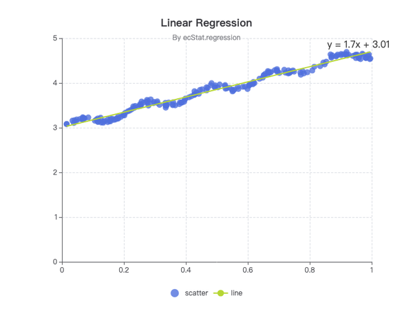
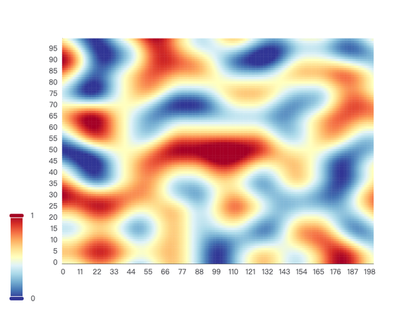
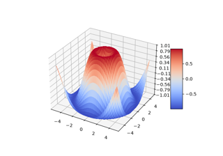

M
MODEL SOLVER建模手
从目标与约束出发，提出模型假设，比较候选方法并解释适用边界。
正在校验约束条件
MModels 把题意解析、项目文件、模型实验、智能体协作、图表生成与论文写作放进同一条可复盘链路。你始终知道模型为什么这样选，结论凭什么成立。
粘贴题目，或拖入题目 PDF / 附件，MModels 会先帮你厘清问题结构。
从原题提取目标、约束、变量与待验证假设。
数据、代码、图表、运行日志和结论放在同一项目。
按赛事模板整理正文、参考文献与最终文件。
每一步都留下可复盘的中间产物，下一次遇到类似问题，可以从已有方法继续迭代。
把自然语言拆成目标函数、约束条件、决策变量和评价指标，生成可讨论的建模地图。
根据题目和数据推荐候选模型，连接项目代码，记录运行参数并校验复现结果。
› inspect dataset / demand.csv› select gradient_boosting› run validation --folds 5✓ experiment #18 saved扰动关键参数，检查结论是否稳定；把模型的边界、风险和适用范围写进证据链。
把模型解释、图表、结果和参考文献收拢进比赛模板，再用评审视角生成修改清单。
复杂任务可以拆给不同角色。每个角色使用同一个项目上下文，完成后回到总工作流汇总。
从目标与约束出发，提出模型假设，比较候选方法并解释适用边界。
检查缺失、异常、口径与分布，生成可以直接进入论文的探索图表。
把实验结果写成清晰段落，核对引用、图表编号与比赛格式要求。
完成缺失值与异常值扫描，发现 2 个待确认口径。
比较 MILP、遗传算法与贪心基线，准备敏感性分析。
已建立“模型假设”章节骨架，等待最终参数说明。
每一个建议都回到数据与假设。你可以接受、修改，也可以把整段过程留作下一次复盘。
— MModels 的协作原则项目数据、预览、绘图和导出放在同一页。支持 CSV / TSV，折线、散点、柱状与饼图，并可导出 PNG / SVG。

同一份实验结果，可以在工作台里继续调整风格、标注和导出规格。



从优秀论文资料库到比赛工作台，MModels 帮你把每个结论放进正确的位置，并在提交前做最后一轮检查。
竞赛日历、截止时间、队伍档案和论文收藏放在一个入口。具体时间以官方通知为准。
适合训练英文论文和快速建模。
适合积累数据分析与优化题经验。
建立队伍模板、论文资产和复盘习惯。
用一套工作流快速切换题型。